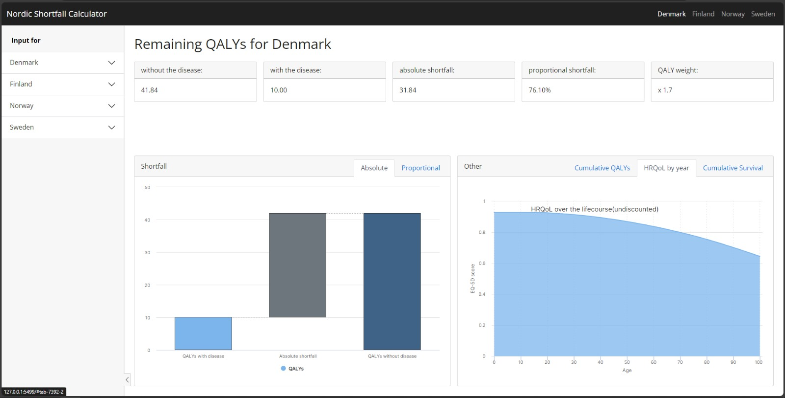

Nordic Shortfall Calculator
The Nordic Shortfall Calculator is a web application that allows user to explore and analyze the quality adjusted life expectancy for the Nordic populations. Tuning the parameter produces adjusted estimates for different outcomes like Absolute shortfall, Proportional shortfal HRQoL and Cummulative QALY and survival.
The app is built using the Shiny package for R. It includes several visualizations and filters created using the following packages: DT, shiny, shinyWidgets, shinythemes, shinyjs, bslib, highcharter….
APP UNDER CONTRUCTION!!!

No matching items